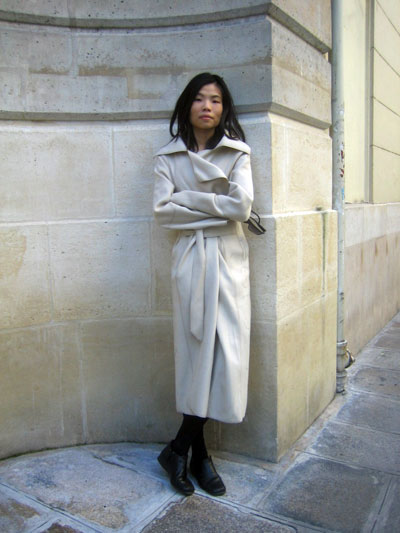

Jester-Knight
Literature
Film
Music
Visual Art
Tributes
Submissions
Links
Contact
Fiona Sze-Lorrain

Biography
Fiona Sze-Lorrain was born in Singapore, and grew up in a hybrid of cultures. After receiving a British education, she moved to the States, and graduated from Columbia University and New York University before pursuing a Ph.D. at Paris IV-Sorbonne. A zheng concertist, she has performed worldwide. One of the editors at Cerise Press , and co-creator of Vif éditions, she writes and translates in English, French and Chinese. She lives in both New York City and Paris, France.
Fiona's book, Water the Moon
Click below for Fiona's work
Karma (.pdf)